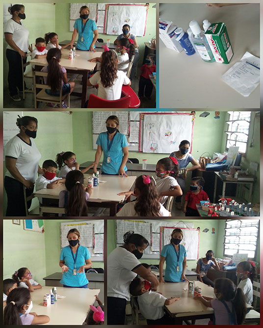
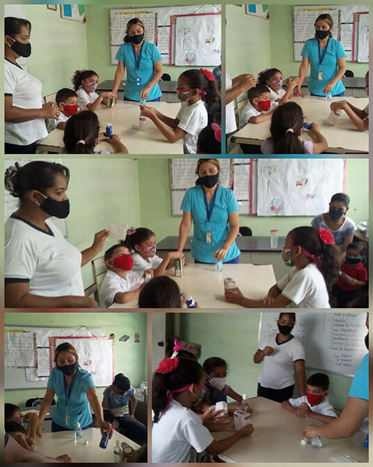
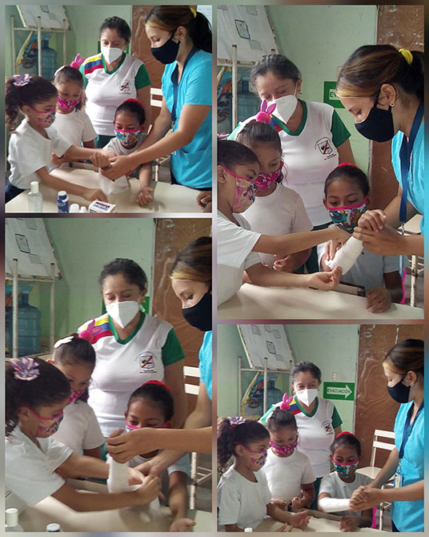
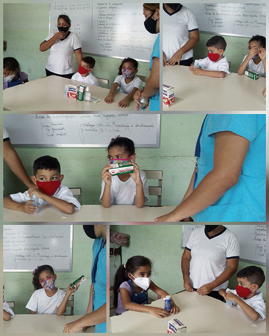
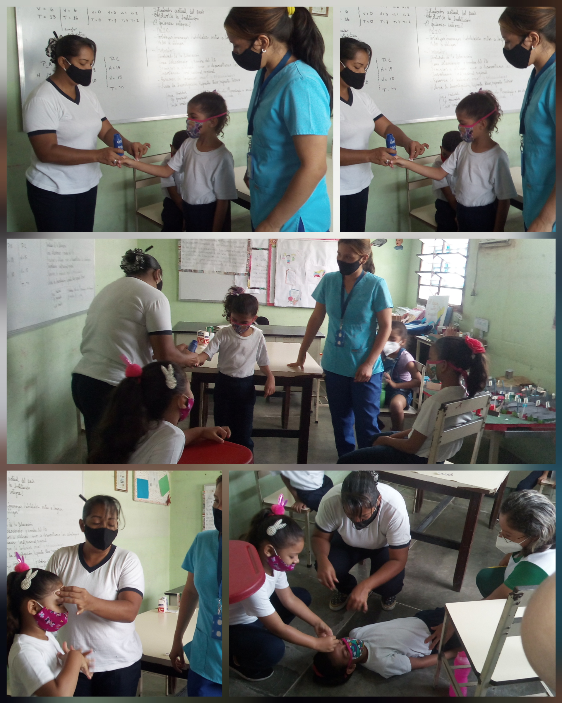
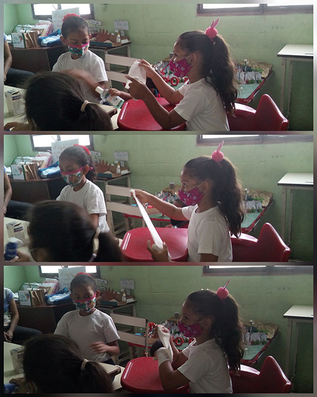
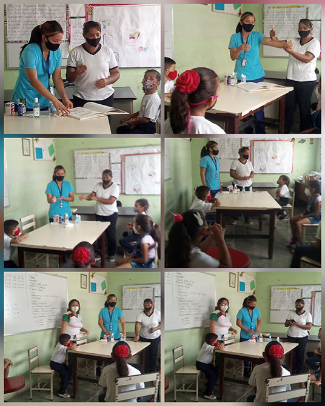
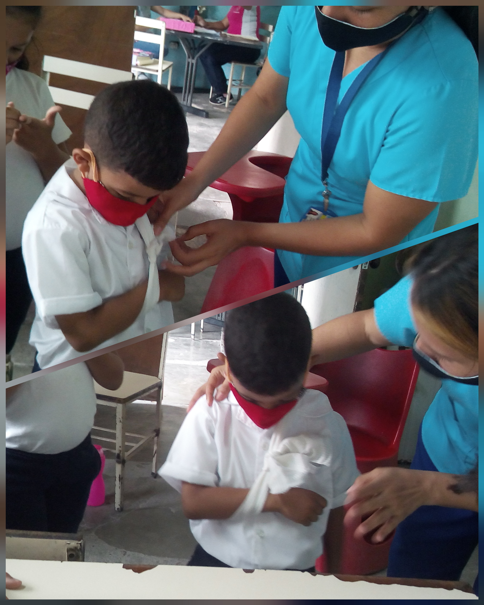

Semana 10
El 11/05/2021 en la escuela “Federico Brito Figueroa” se realizó una actividad sobre los primeros auxilios con los niños del plantel y la participación de las tutoras comunitaria e institucional. Se realizó explicaciones, botiquín escolar y que debemos hacer ante un accidente dentro de la escuela y el hogar.







